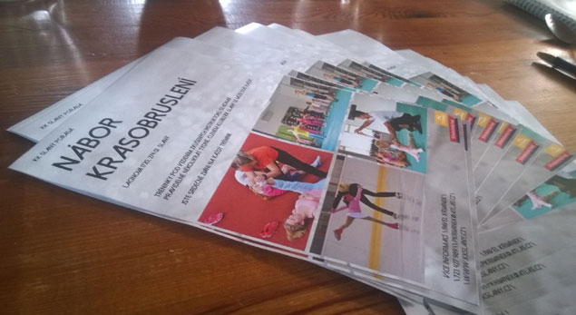
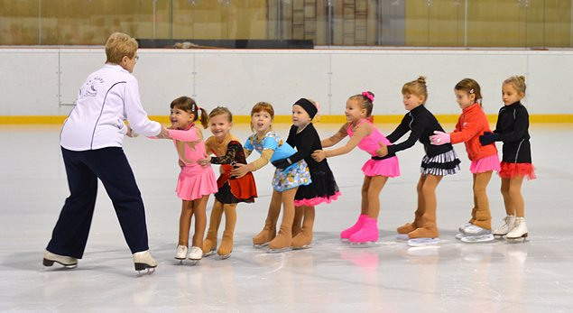
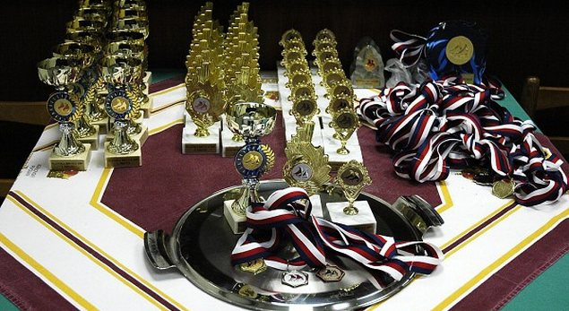

Naše tréninky
Další tréninky

Nábor nových členůDěti od 3 let, bruslit umět nemusí
Naši nejmenšíKlubová základna
Slánská brusleNáš tradiční závod od roku 1981Aktuality
Vše o klubu
O nás
Krasobruslařský klub královského města Slaného z.s. je přímou nástupnickou organizací TJ Kablo Kladno – oddílu krasobruslení.
více